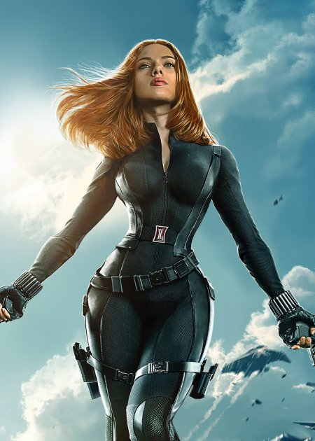
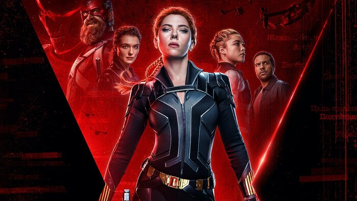

Ска́рлетт Інґрід Йоганссон (англ. Scarlett Ingrid Johansson; нар. 22 листопада 1984, Нью-Йорк) — американська акторка, співачка, модель та політик данського походження. Акторське визнання отримала на початку 2000-х років завдяки ролям у фільмах «Світ примар», «Труднощі перекладу», «Дівчина з перлинною сережкою», «Любовна лихоманка», «Матч-пойнт», «Люсі» та багатьма ролями; переможниця премії БАФТА 2004 року, чотириразова номінантка на премію «Золотий глобус» (у 2004—2006). У 2010-х роках найбільш відома роллю Чорної вдови зі Всесвіту Marvel.
Скарлетт народилася в змішаній дансько-єврейській родині. Її батько Карстен Йоганссон народився в Данії, працював архітектором, пізніше емігрував до Сполучених Штатів. Її мати Мелані Слоун походить з єврейської родини, з району Бронкс, Нью-Йорк. Батьки акторки познайомилися в Данії, де тимчасово мешкала її мати. У Скарлетт є брат-близнюк Гантер, старша сестра Ванесса, брат Адріан і інша сестра Крістіан від другого шлюбу батька.
«Чо́рна вдова́» (англ. Black Widow) — американський супергеройський фільм, заснований на коміксах видавництва Marvel Comics про супергероїню Чорну вдову, спродюсований Marvel Studios з Walt Disney Studios Motion Pictures у ролі дистриб'ютора. Є двадцять четвертою стрічкою в рамках Кіновсесвіту Marvel (КВM) і першою стрічкою четвертої фази. Посилатиметься на минуле Наташі в Будапешті. Головну роль зіграє Скарлетт Йоганссон. Зйомкою картини займалась режисерка Кейт Шортленд за сценарієм Еріка Пірсона та оповідання Джека Шеффера та Неда Бенсона, тоді як акторський склад включає в себе Скарлетт Йоганссон в ролі Наташі Романової / Чорної вдови, а також Флоренс П'ю, Девіда Гарбора, О. Т. Фаґбенлі, Вільям Герта, Рей Вінстон, та Рейчел Вайс.
Розробка фільму «Чорна вдова» розпочалася у квітні 2004 року «Lionsgate», а Девід Гейтер долучився до написання та режисури. Проєкт не рухався вперед, і права на персонажа були повернені студії Marvel до червня 2006 року. Йоганссон грала Чорну вдову в кількох фільмів КВМ, починаючи з «Залізної людини 2». Marvel і Йогансон висловлювали спільний інтерес до сольного фільму кілька разів протягом наступних років, до того, як Шеффер і Шортленд були найняті у 2018 році. Подальший кастинг відбувся на початку 2019. Фільмування відбувалися з травня по жовтень у Норвегії, Будапешті, Марокко, Pinewood Studios в Англії та в Мейконі, Джорджія.
Прем'єра стрічки у форматі 3D та IMAX 3D в Україні відбулася 8 липня 2021 року, а в США — 9 липня. Крім того, 9 липня фільм вийшов на стрімінговому сервері Disney+. Спершу вихід фільму в Україні планувався 30 квітня 2020 року, проте був тричі перенесений внаслідок пандемії коронавірусної хвороби.